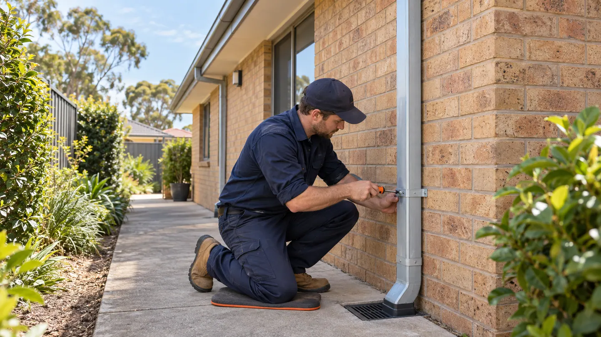

Interior
Cladding Repairs & Replacement
Cladding work can address damaged exterior boards or panels, localised weather exposure, replacement sections and new wall-finish enquiries.
Explore serviceWeather-facing maintenance
Inspection-led maintenance for roofs, rainwater goods and exposed exterior surfaces.
Describe your request
Service directory
Open a service below to see the repairs available, common faults and factors that affect the quote. If you are unsure which service to choose, describe the problem directly to Ellis Perth. We inspect the property and confirm the work and written quote.
Interior
Cladding work can address damaged exterior boards or panels, localised weather exposure, replacement sections and new wall-finish enquiries.
Explore serviceExterior
Ellis cleans, repairs and replaces blocked, leaking, rusted or loose gutters and downpipes in Perth. We check the cause of overflow or poor drainage and confirm which sections need cleaning, resealing or replacement.
Explore serviceExterior
House painting can cover interior rooms, exterior surfaces, trims and repainting programs after preparation and coating compatibility are assessed.
Explore serviceExterior
Paving services cover new paths and outdoor areas, lifted or sunken sections, edging and repairs where the base and drainage are suitable.
Explore serviceExterior
Roofing enquiries include leak investigation, damaged tiles or sheets, flashings, roof penetrations and larger repair or replacement scopes.
Explore serviceBuild & Renovate
Rendering services apply or repair compatible exterior and interior masonry finishes after the substrate and moisture conditions are assessed.
Explore serviceFor chipped masonry finishes or recurring cracks, explore wall rendering and render repairs. The wall substrate and any moisture symptoms need assessment before a new finish is agreed. If the surface instead needs a coating after sound preparation, compare house painting. Describe both the damage and the finish you want so Ellis can identify preparation and related repairs in the quote.
Common enquiries
Seven Perth-area entry points
Ellis Services Group supports property requests across the Perth metropolitan area. Choose a service and share your suburb or postcode to get started.
From request to confirmation
Perth suburb or postcode, property type and where the issue is located.
What you can safely observe, when it started and any access limits.
Your preferred visit window; Ellis confirms the appointment and safe access arrangements.
Service questions
Use the contact page to share your service, suburb or postcode and property details.
Include your suburb or postcode and a clear description of the work you need.
The Ellis Perth office discusses the job directly with you and confirms what our local team can complete.
Start with one request
Share the task and location to start your service request.